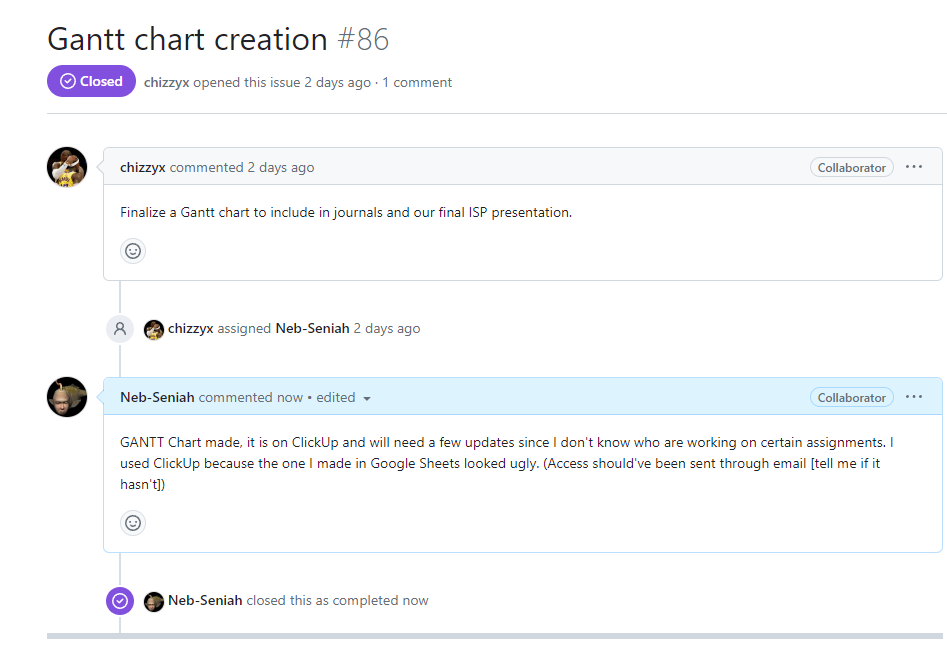
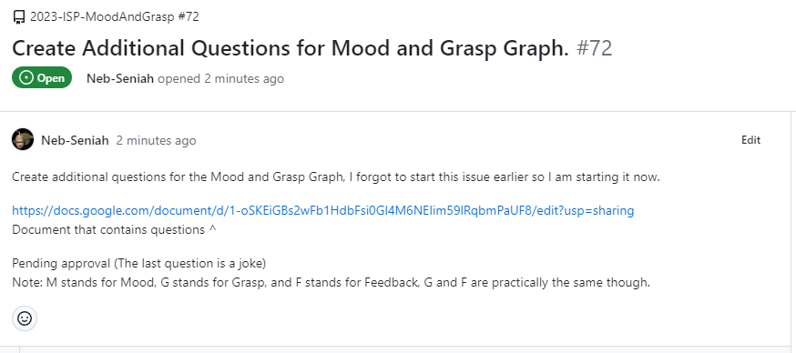

Due to other obligations in CS, as well as my AP tests this week, I had decided that work on the ISP would be on the backburner for this week.
I plan to resolve one of two issues (might do both if they are easier than I expected), the first one is to use DaisyUI to make selectable themes for users, and the other is to simpify elements of the website into the css file. I am choosing these because I need practice in css. I am also going to put in an effort to learn more about Django, since it is used in the ISP.
I ended up trading the DaisyUI stuff for the GANTT Chart, since someone already took DaisyUI :(, first I created a chart in google sheets, then when I realized it looked bad I went over to ClickUp instead. In terms of Issue 80, I have not made as much progress as I had expected, half because I held off doing it to give the person working on DaisyUI time to commit his stuff, and then half because I am not super familiar with CSS. No other major issues this week, which is good.
The thing I plan to do this week is mainly to call someone from the main class where the ISP is going on to try and better undertand everything that is happening, I do hope that my work on the graph isn't invalided because of someone else doing and not properly telling me. Because the goal of this week is more of a communication thing I do not really have a specific issue to point to. The effects of me understanding what has happened in my absense (mainly caused by my 'procrastination' on the English ISP) will allow me to make better educated decisions. I had not done this yet because I was nervous about talking to someone about something it feels like I should have known about already, which is also probably why I dont like using the secure shell interface so much. Most likely I will be working on the questionare for emotions and grasp, however that too does not have a related issue.
I did what I set out to do, I established some contact (however I am still a little shy about asking some questions), and I worked on the list of questions going to be asked to the user, do note that although I there are now 20 real questions, 5 of them were light edits on questions already made by group members. I was not able to find the time to work on the graph further because of an unexpected WI-FI outage on behalf of ATnT, and watching a movie on friday (the movie thing is on me though). I was not able to finish my other Journals for the same reason, so they will be updated over the weekend instead.
Probably going to keep this one brief. Not much work has been done on my side of the ISP because I forgot about it for a little while, probably also why there is a month time-skip in these entrys. I have not worked out how python works on SSH when trying to make graphical interfaces (mainly graphs), and I am kinda scared that my work on a python sandbox editor is going to go to waste because of some type of change in the commands used between SSH and the Sandbox or something like that. Although I don't think it will be to bad since once I start cracking down on the graphics stuff on SSH, even if I have setbacks, I will probably just accidently grind it out and finish it in like a week like I usually do with homework.
Obviously me forgeting about the ISP is a pretty major Scheduling challenge, and if anyone asks I blame Phoenix-Con and the English ISP again. Actually looking back the past few weeks since Spring Break feel like they have had larger work-loads.
Got some discord messages yesterday, they weren't directed at me but they show that other people are still alive and probably remembered to do their work! (Unlike me).
Ben talk like caveman because me have no brain-power left. Work on ISP not hard, but is tedious. Me hope that Ben can finish in timely manner so me Spring Break no ruined. Me not understand connecting outside websites and coder-merlin, me want ask, but me no want be burden. L-Systems confusing, me hope me understand because me know it get harder.
Ben happy because me only have 3 days of school this week, Ben sad because me have major english assignments due on thursday. Me also not present yet, and me concerned I have forgot important details.
Ben no recieve communication much, me hope it get better soon. Me see updates on issue board. Me assign myself to making graph, nobody complain so me do it.
Due to what will be discussed in the Interpersonal challenges, I now have to focus on learning and reviewing more about python, which will probably help me for the quiz on it at the end of the year. Unfourtunately this means that my work on remembering Swift graphical things was kind of pointless for now, which is unfourtunate. I also learned of some problems my team was having, mainly how to get a student-hosted website to communicate information with the codermerlin servers, I think they have a solution but it is too early to tell. I don't think my job will be very tecnically challenging however, as it is mostly basic graphical stuff for the ISP, which if you look at my final project for animation you can tell I am 100% an expert in getting the ball rolling. Most of what I have to do will either be minor problems that I can solve in 10 minutes or just repetitive jobs.
My sleeping scedule is going to provide the biggest challenge for cooperation on the discord. This is because I tend to go to sleep around 10:00 pm and wake up around 5:00 am, while the rest of the group goes to sleep past midnight and wakes up some time later. And also the scedule for feburary is pretty full of other stuff, most work is probably going to be done on non-school days. Also our GANTT Chart for the project isn't all there, some of the things labeled as must-do's are more like might-do's.
Finally got in contact with everyone else this monday! Might've been a little late to the party due to me being blind and not seeing the friend request from one of the members of the group, which I mentioned last time. Discord mostly goes off at midnight when I am asleep so I still don't really get to be a large part of the conversation, but baby steps are improtant. I do kind of wish I knew what everyone was doing though so I can get a feel for who I might need to work closer with, or what I should aviod doing.
While I did not get much work on the ISP this week, similar to last week (I hope this doesn’t become a pattern), I did get to doing a little bit of ‘research’ on the graphical side of Swift, since I didn't really retain that much from when I looked over the pong code prior. Unfortunately my research did not boast many if any results, and possibly confused me more since I am not entirely sure if XCode is any different from Swift being used in tabby. Separate from the ISP, but the lesson for this week was fairly confusing, and not much guidance was given in forms other than the answers on the internet. On a final note, I have noticed that I am still getting used to using swift again, and still make occasional mistakes in the syntax of my code. Strangely enough, this involves putting in semicolons accidentally, even though I haven’t used Java in well over two months.
Four days of school were delayed last week due to bad weather conditions, in which I did not get much done on any school work for a while. Since we missed four days there aren't really any other scheduling issues that could happen that week, but yet English still finds a way to take up most of my time, even when school is canceled. I bring this up now because there weren’t many other scheduling issues this week.
On the 30th of January I was sent an invitation to join the discord for the ISP group. I sent my discord information so that I could be added, radio silence occurred afterwards, which in hindsight was probably my fault because I didn’t see the friend request I had been sent from one of the other members of my ISP, I was sent another email on Thursday reminding me about it though. Less of an interpersonal challenge but on the 30th I also noticed that I was sent access to a slide show for ISP progress week 4, I don't really know what it is about and it just looks like what we put in our journals here, maybe it is something that Mrs. Jang’s class does?
Unfortunately, I did not spend much time with the Mood and Grasp Graph this week due to issues discussed in the next category. That being said, I do still have some technical related issues to discuss that I have been holding onto. The first of which is the Ubuntu software, I don't really understand its practical application, it feels like it is just a way to get past the school’s auto-blocker and reframe the way we program a little. The second thing I wanted to put out there is that working on python and SQL for the past few weeks has started to deteriorate my abilities to function with swift, it should get better now that I finished the python module, but I have a concern that the java module will have a similar effect on me.
My scheduling challenges might sound a little familiar this week, as just like on the week of the 9th of January English has taken up most of my time. This is because of the ISP and book quiz that I was given to do this week. Of course I also had other things going on, I had a Pre-Calc quiz retake, and then another Pre-Calc quiz to take on top of a physics test, and naturally the SQL quiz. I am hesitant to blame it all on school of course, because although it has been a hectic week, much of the fault can still be placed on me and some personal problems I have been dealing with.
There has not been much communication this week, which is concerning. I also have come to the realization that I might be one of the only members of the group only doing only this project, as the option was given to work on multiple projects for the year. Also as an update for the previous entry, there were no impactful responses to the issue I created, so I archived it. I don't like the idea of making gmail the primary method of communication, as it can be unreliable and inefficient at times, but it might be the only option.
The biggest technical challenge I had to face over the week would be understanding the graphical interface of Swift. I’ll be honest, I still don't really comprehend it either. I set it as a goal on the project's view to review the Ping-Pong code made in CS-I, which I do hope that people are doing. The biggest part of the Ping-Pong code that I don't understand would be how different files interact with each other, as well as some of the more complex lines from near the end. However, I believe that with more time and google searches, I will be able to understand these issues better.
The biggest scheduling challenge became clear to me over the weekend. It is that most of the people in my group have other projects to work on or not much time to dedicate to CS in general. I could tell that this is the case because most of the items for the project view (as well as comments) came in over Saturday and Sunday. This represents an issue in scheduling instead of an interpersonal issue because we don't even really work on the project on the same days, a solution could be to work on it over the weekend myself, and do everything else over the weekday.
In terms of interpersonal challenges, it is kind of dry this week. Same issue as last week and I have a solution in place, I sent an issue for people to submit what would be ideal for communication during the project. I will also be sending an email on Saturday as a reminder. Of course the scheduling challenge also does apply here, as not working on the same day restricts communication possibilities by quite a large margin.
The biggest technical challenge from the first week on the ISP would be getting to know the new equipment. We started using the github project managing service, which we also learned about it in class on Monday and Wednesday. This software has posed and will pose multiple challenges due to mine and everyone else's relative inexperience. For example, I tried to create issues in the repository instead of the projects page, so they didn't carry over, now there are 4 issues that are closed in the repository. That being said, I believe that most of the challenges the new software creates will be caused mostly by the user misclicking or forgetting something about it.
The biggest scheduling challenge to happen this week was with my English class, since it is the first week and nothing else really could have that large of an impact. My English class has taken some of the first days of work from me because of multiple assignments happening at the same time. To the larger point, this entire project will be littered with Scheduling challenges due to me not sharing CS-II (or any other class I am aware of) with anyone else from the group. Because of this, I believe our scheduling challenges will be based around us not working on the project at the same time, as well as multiple communication challenges, and we will have to use an external service for communication.
We faced no unexpected challenges on the interpersonal front. The main thing is that we had to get into communication with each other. To do this I plan to email them or use the directory to get a line of communication running. However, a more interesting problem is that I am the only one to have touched a README.md file, and also the only one to add any issues as of Friday 10:12AM. To end things with a look toward the future, over the course of this project our team will get to know each other, and we will all probably come out of it as better communicators.
Software Development Engineers (SDE) traditionally work 9-5 out of office jobs, and a Bachelor’s is needed to become one. SDEs manage operating systems for clients and businesses, run diagnostic tests, and perform troubleshooting. Most SDEs command a strong proficiency in multiple programming languages, technological processes, and analytical skills. I think I would make a decent SDE because most of the time I am a creative person and I am also fairly analytical. Most of the problems I would encounter would revolve around my communication skills, or lack there-of, to solve this issue we could use a communication app, like discord.
QA Engineers oversee quality assurance and testing for products, they do this over the entire development process. Their main purpose is to identify problems in a software before launch and collaborate with others to help fix the errors that might occur. To become a QA Engineer you need a bachelor's degree in engineering. There is often a confusion that occurs when differentiating between the QA Engineer and the QA Tester, the Tester is focusing on finding bugs and assuring the product works, while the Engineer is focused on making the product perfect. I would make a good QA Engineer because I have good attention to detail, problem solving skills, and time management. Some challenges would be communicating with the developers and listening to their queries, which is a problem I could solve by focusing on what they say.
Project Managers are goal-oriented leaders who assign tasks to the engineers and developers. While typically Project Managers lead production, they will also get involved in aspects of the software development process. To become a Project Manager you need a degree in CS, IT, or IT Project Management, and while you don't need to be an expert in CS languages, most Project Managers will understand common languages. While I might not be a natural leader, I don't struggle in the subject, furthermore, I have an understanding of most of the roles required and can perform most of their tasks, for these reasons I believe that I could make an adequate Project Manager. Aside from aforementioned challenges, I would likely have an issue with planning, which is a big part of being a Project Manager. To combat this issue, I could work together with the rest of my group to create a game-plan.
Product Managers manage the scope of the software being made, and they are usually the ones to make tradeoffs in accordance with company ideals and values. Product Managers in Software also work on how the user controls the software, as well as how the product is marketed to the public. Once again, you need a bachelors (software development, computer science, product management, etc) in order to become a Product Manager as well as previous work experience. I probably wouldn’t make a good Product Manager despite my skill in understanding the user because of the great skills I would have to have in interpersonal communication, with both members of the staff and stakeholders, as well as needing to be able to see what is best for the company, because I am often blinded by personal beliefs rather than the greater good of the company. Of course this is an easier problem to solve, I could just join a company that has values I agree with, and it won't even come up in the ISP.
The job of the Release Engineer (RE) is simpler than the ones discussed prior, all the RE has to do is outline the steps needed to release, from beginning to end, and assist along the way. However, the RE is unique because they often represent a schism between small projects and large, industrial projects, as small projects don't have a need for an RE. To be an RE you need a bachelors, but it certainly wouldn't hurt to learn the other roles of your team, since you are likely to be helping them a lot. I would make a mediocre RE because of your role as assistant to the team for much of the project's duration, even if it requires communication skills. The biggest thing I would need to work on is similar to the Project manager, I can't make accurate time-tables for features so I would have to rely on the rest of my team to help me construct them.